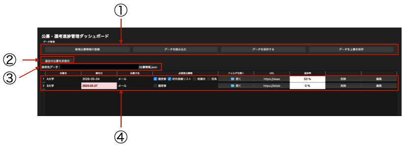
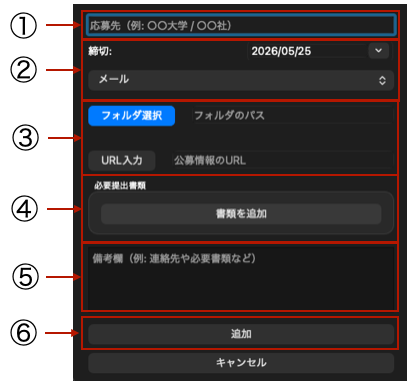

このツールは、Qtを使用して開発された大学教員公募の締切や提出書類を一元管理するためのGUIです。それぞれの公募の情報を入力し、締切日や必要書類、進捗状況を簡単に確認・管理できます。
ソースコードはリポジトリで公開しています。
主な機能は以下の通りです：
メイン画面では、登録された公募の一覧が表示されます。

① 公募の追加・データの読み込み・保存・上書きができるボタン。公募の追加ボタンを押すと、入力ダイアログが表示されます。データの読み込み・保存・上書きボタンは、現在のデータをファイルに保存したり、保存されたデータを読み込んだりするためのものです。データはJSON形式で保存されます。
② 締切が過去の公募を非表示にするためのボタン
③ 上書き保存先のファイル名（データの読み込み下または保存先が表示されます）
④公募の締切日、必要書類、フォルダを開くボタン、URLを開くボタン、進捗率などの情報が表示されるテーブル。必要書類で準備が完了したものはチェックを入れることで進捗率が更新されます。
公募情報の入力ダイアログでは、公募名、締切日、必要提出書類、URL、備考などの情報を入力できます。

① 公募名を入力するテキストフィールド
② 締切日の入力と提出方法の選択
③ 公募の提出物を管理するためのフォルダ選択と公募のURL入力
④ 提出書類の登録
⑤備考欄（例: 連絡先や必要書類など）を入力するテキストエリア
⑥ 追加・編集を確定するためのボタン